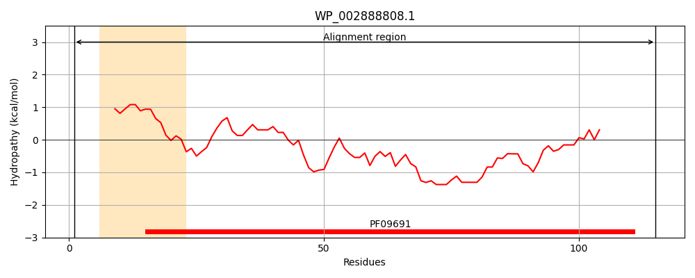
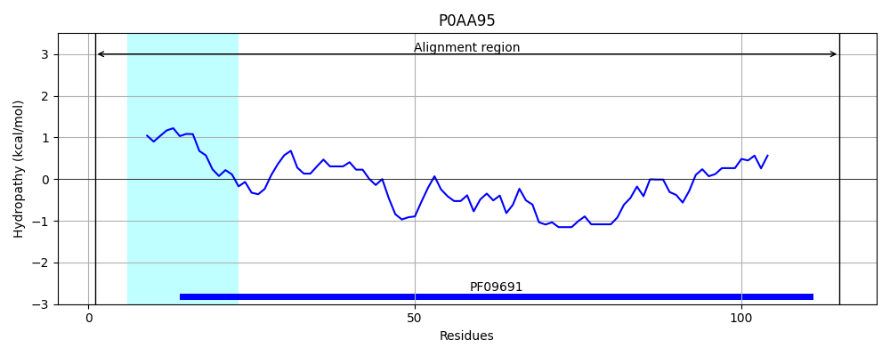
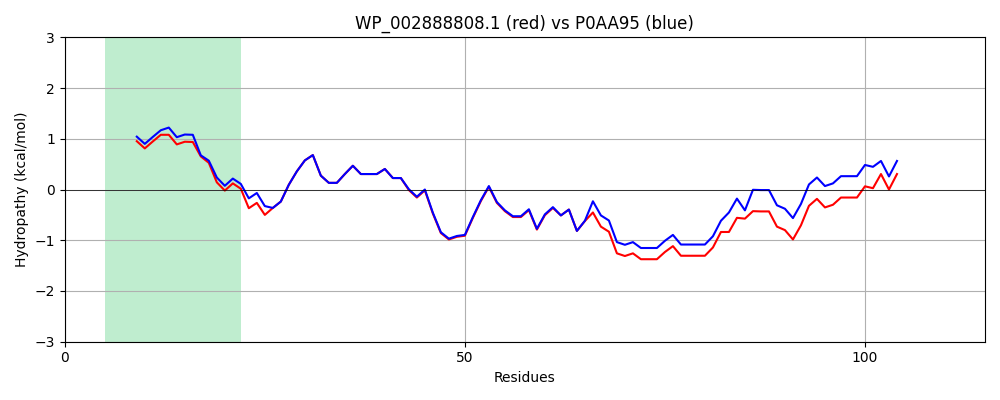

Hit Accession: P0AA95
Hit TCID: 8.A.2.1.3
Hit Description: gnl|BL_ORD_ID|8650 gnl|TC-DB|P0AA95|8.A.2.1.3 Uncharacterized protein yacC OS=Escherichia coli (strain K12) GN=yacC PE=4 SV=1
Mach Len: 115
e:0.000000
Query TMS Count : 1
Hit TMS Count: 1
TMS-Overlap Score: 0.900000
Predicted Substrates:None
BLAST Alignment:
| Protein Hydropathy Plots: | |
|---|---|
|  |  |
Pairwise Alignment-Hydropathy Plot: | |
|  | |